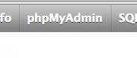
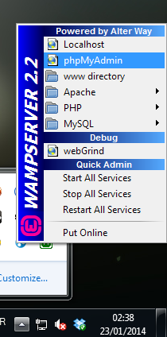
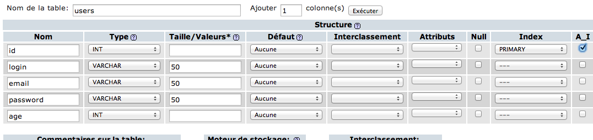
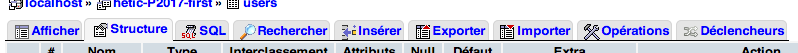
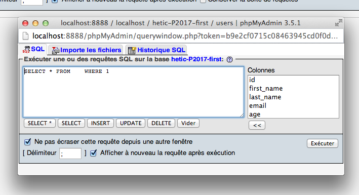

H2 - P2017
Développement web
Cours 22 - 2014-01-27
github : https://github.com/brunosimon/hetic
site : http://bruno-simon.com/hetic/p2017/
contact : bruno.simon@hetic.net - @bruno_simon
PHP
Base de données
Qu'est-ce que MySQL ?
Système de Gestion de Bases de Données Relationnelles (SGBDR)
Logiciel permettant de stocker de grande quantité de données
Se trouve sur le serveur
Utilisable en PHP
Très répandu
Inventé par Michael Widenius
SQL = Structured Query Language
My = ?
Une base de donnée contient des tables
Ces tables contiennent des lignes
Ces lignes contiennes des céllules / colonnes
Ces colonnes contiennes des données
Exemple de table d'utilisateurs
| id | first_name | last_name | age |
|---|---|---|---|
| 1 | Adnan | Vince | 24 |
| 2 | Vasil | Avner | 17 |
| 3 | Landen | Roch | 31 |
La structure de la table ici est id, first_name, last_name, age
L'ID est presque toujours présent
Unique pour chaque ligne
Il faut spécifier le type de données de chaque colonne
Il en existe de nombreux
Et encore plein d'autres
Tous ces types peuvent avoir des options
Parmi ces options on trouve l'encodage
Les plus utilisés sont utf8_general_ci et utf8_unicode_ci
utf8_general_ci est plus rapide mais ne fait pas la différence entre certains caractères
PhpMyAdmin :
Interface permettant de manipuler les données
Pas besoin de maîtriser SQL
Installé avec WAMP et MAMP
Mac :



Windows :

Une base de donnée est accessible par connexion
Les comptes sont administrables et ont des droits spécifiques
Ex : créer des tables, créer des données, supprimer des données, ...
Ne donnez pas trop de droits à un utilisateur (sécurité)
Pour rajouter un compte, dans PhpMyAdmin, allez dans l'onglet "Utilisateurs" puis cliquez sur "Ajouter un utilisateur"

Créez votre première base de données dans l'onglet "Bases de données"
Appellez la comme vous le voulez et choissez utf8_general_ci

Rentrez dans la base de donnée (menu de gauche)
Créez une nouvelle table nommée "users" avec 5 colonnes
Cliquez sur Exécuter

Dans le formulaire qui apparait, chacune des lignes correspond aux colonnes de la base de données
Remplissez-les comme cela :

Essayez d'ajouter des données
De les modifier
De les supprimer
Testez de mauvaises valeurs
(trop de caractères, pas le bon type, etc.)
Explorez les différents onglets

Cliquez sur le petit icône SQL dans le menu de gauche pour ouvrir une popup


Essayez les requêtes SQL suivantes
INSERT INTO users (login,password,email,age)
VALUES ('bruno','azerty','bruno@simon.com',24)
UPDATE users SET login = 'bueno' WHERE id = 1
DELETE FROM users WHERE id = 1
SELECT * FROM users
Ça y est, vous êtes des pro du SQL
Les retours à la ligne et les espaces n'ont aucune importance
Les majuscule non-plus (juste pour la lisibilité)
En PHP
Il faut se connecter à la base de données
À l'ancienne :
$db = mysql_connect('localhost','user','password');
mysql_select_db('database');
Remplacez les différentes valeurs
Vous pouvez oublier ce que vous venez de voir
Via PDO
try
{
$pdo = new PDO('mysql:dbname='.DB_NAME.';host='.DB_HOST,DB_USER,DB_PASS);
}
catch (PDOException $e)
{
die('error');
}
PDO permet de se connecter à la base de données
Plus sécurisé
Plus logique
Plus facile (presque)
La méthode query() renvoie une instance de PDOStatement
Cette instance possède des méthodes
fetchAll() renvoie un tableau de toutes les lignes
fetch() renvoie une seule ligne
En appelant fetch() à nouveau, on aura la ligne suivante
Avec fetchAll()
$result = $pdo->query('SELECT * FROM users');
$users = $result->fetchAll();
echo '<pre>';
print_r($users);
echo '</pre>';
// $users est un tableau contenant toutes les lignes de la table users
Avec fetch() dans un while
$result = $pdo->query('SELECT * FROM users');
while($user = $result->fetch())
{
echo '<pre>';
print_r($user);
echo '</pre>';
// $user correspond à une seule ligne
// Mais dans le while, chaque ligne sera récupérée
}
Par défaut, PDO renvoie un tableau dans un format étrange
$query = $pdo->query('SELECT * FROM users');
$user = $query->fetch();
echo '<pre>';
print_r($user);
echo '</pre>';
exit;
Va afficher
Array
(
[id] => 4
[0] => 4
[login] => bruno
[1] => bruno
[email] => bruno@simon.com
[2] => bruno@simon.com
[password] => azerty
[3] => azerty
[age] => 24
[4] => 24
)
C'est un tableau associatif avec les valeurs en double
La valeur associée au nom de la colonne
La valeur associée à un numéro
Il est possible de modifier le type de résultat lors de l'initialisation de PDO
Pour cela, on utilise la méthode setAttribute() sur l'objet PDO
Avec PDO::ATTR_DEFAULT_FETCH_MODE en premier paramètre
try
{
$pdo = new PDO('mysql:dbname='.DB_NAME.';host='.DB_HOST,DB_USER,DB_PASS);
$pdo->setAttribute(PDO::ATTR_DEFAULT_FETCH_MODE,PDO::FETCH_OBJ);
}
catch (PDOException $e)
{
die('error');
}
Il existe plusieurs valeurs a mettre en second paramètre de setAttribute(). Voici les principales :
- PDO::FETCH_BOTH : Tableau associatif avec valeurs dupliquées dans clés et numéros (par défaut)
- PDO::FETCH_NAMED : Tableau associatif
- PDO::FETCH_OBJ : Objet (très utilisé)
La méthode exec() exécute une requête SQL et renvoie le nombre de lignes affectées
En PHP, essayez les requêtes suivantes :
// 'INSERT INTO ... VALUES ...' permet d'ajouter une ligne dans la table
$result = $pdo->exec('INSERT INTO users (login,password,email,age) VALUES (\'bruno\',\'azerty\',\'bruno@simon.com\',24)');
echo '<pre>';
print_r($result);
echo '</pre>';
// 'UPDATE ... SET ...' permet de mettre à jour une ou plusieurs lignes
$result = $pdo->exec('UPDATE users SET login = \'toto\' WHERE id = 2');
echo '<pre>';
print_r($result);
echo '</pre>';
Les requêtes SQL deviennent vite trop compliquées comme ci-dessous
$exec = $pdo->exec('INSERT INTO users (login,password,email,age) VALUES (\''.$data['login'].'\',\''.$data['password'].'\',\''.$data['email'].'\','.$data['age'].')');
Il est visuellement trop difficile de dinstiguer la requête SQL propre, des variables PHP, des quotes échapées, etc.
PDO offre une solution
$prepare = $pdo->prepare('INSERT INTO users (login,password,email,age) VALUES (:login,:password,:email,:age)');
$prepare->bindValue(':login',$data['login']);
$prepare->bindValue(':password',$data['password']);
$prepare->bindValue(':email',$data['email']);
$prepare->bindValue(':age',$data['age']);
$exec = $prepare->execute();
Ce n'est pas plus rapide à écrire mais c'est beaucoup plus clair
$prepare = $pdo->prepare('INSERT INTO users (login,password,email,age) VALUES (:login,:password,:email,:age)');
/* ... */
La méthode prepare() prépare la requête SQL
Les différentes valeurs sont remplacées par des identifiants avec le signe : devant
/* ... */
$prepare->bindValue(':login',$data['login']);
$prepare->bindValue(':password',$data['password']);
$prepare->bindValue(':email',$data['email']);
$prepare->bindValue(':age',$data['age']);
/* ... */
La méthode bindValue() sur l'objet renvoyé par prepare() permet d'assigner les valeurs à chaque identifiant
/* ... */
$exec = $prepare->execute();
Il ne reste plus qu'à exécuter la requête avec la méthode execute() sur l'objet renvoyé par prepare()
L'object renvoyé par execute() fonctionne comme l'objet renvoyé par exec() et par query()
Il est possible d'utiliser fetch() et fetchAll() dessus